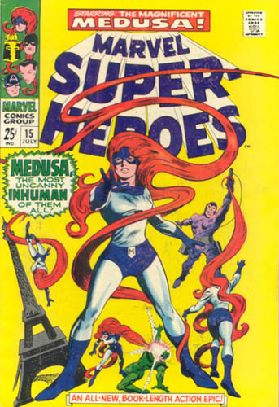

Favorite Story Line :Fantastic Four 44, which was the first appearance of Gorgon, the re-apperance of Dragon Man, and was a turning point in the life of Medusa as we learned of the Inhumans.
|

|
|
Least
Favorite Story Line:Fantastic Four Annual 18, the
marriage of Medusa and Black Bolt. The issue was a tie in to X-Men
issue 137, the death of the Phoenix. The problem lies in that
everything happens on the day of the marriage, which was typical
of Marvel at the time. Medusa's proudest day, and the cast seemed
terribly out of character, go fig.
|
| Little Known Fact :Medusa started off as a villain, since she was discovered by the Wizard on a deserted beach. She has since joined the side of heroes over the years, in hopes of understanding the human race. |
Powers :Medusa has the power to control her hair where as she can lift and move her hair in various ways. She can lift roughly 1000 lbs (as she was seen lifting 5 men at once) as well as other effects. This includes a fan, a whip, and anything else she can imagine..
RETURN TO FANTASTIC FOUR'S INTRODUCTION PAGE